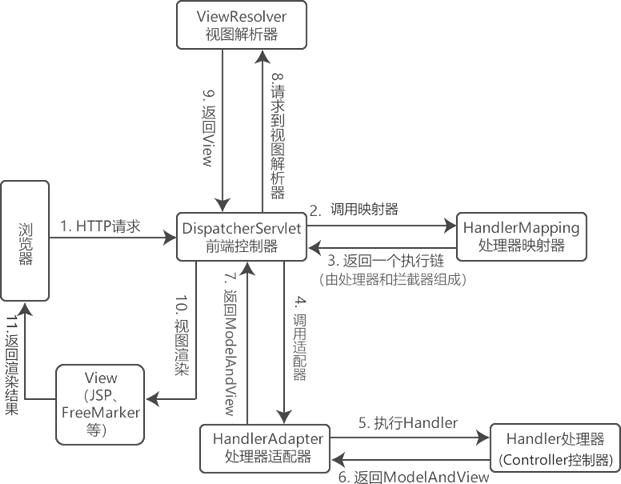

首页 > Spring MVC
Spring MVC工作流程
本节，我们就对 Spring MVC 的工作流程以及在整个流程中涉及的 Spring MVC 组件进行介绍。
SpringMVC 的执行流程如下。
下表对各个组件的功能说明如下。
以上组件中，需要开发人员进行开发的是处理器（Handler，即 Controller）和视图（View）。通俗的说，要开发处理该请求的具体代码逻辑，以及最终展示给用户的界面。
Spring MVC 工作流程
Spring MVC 执行流程如图 1 所示。

图1：Spring MVC 工作流程
图1：Spring MVC 工作流程
SpringMVC 的执行流程如下。
- 用户通过浏览器发起一个 HTTP 请求，该请求会被 DispatcherServlet（前端控制器）拦截；
- DispatcherServlet 调用 HandlerMapping（处理器映射器）找到具体的处理器（Handler）及拦截器，最后以 HandlerExecutionChain 执行链的形式返回给 DispatcherServlet。
- DispatcherServlet 将执行链返回的 Handler 信息发送给 HandlerAdapter（处理器适配器）；
- HandlerAdapter 根据 Handler 信息找到并执行相应的 Handler（即 Controller 控制器）对请求进行处理；
- Handler 执行完毕后会返回给 HandlerAdapter 一个 ModelAndView 对象（Spring MVC 的底层对象，包括 Model 数据模型和 View 视图信息）；
- HandlerAdapter 接收到 ModelAndView 对象后，将其返回给 DispatcherServlet ；
- DispatcherServlet 接收到 ModelAndView 对象后，会请求 ViewResolver（视图解析器）对视图进行解析；
- ViewResolver 解析完成后，会将 View 视图并返回给 DispatcherServlet；
- DispatcherServlet 接收到具体的 View 视图后，进行视图渲染，将 Model 中的模型数据填充到 View 视图中的 request 域，生成最终的 View（视图）；
- 视图负责将结果显示到浏览器（客户端）。
Spring MVC 常用组件
Spring MVC 的常用组件共有 6 个，它们分别是： DispatcherServlet（前端控制器）、HandlerMapping（处理器映射器）、HandlerAdapter（处理器适配器）、Handler（处理器）、ViewResolver（视图解析器）和 View（视图）。下表对各个组件的功能说明如下。
| 组件 | 提供者 | 说明 |
|---|---|---|
| DispatcherServlet（前端控制器） | 由框架提供 |
它是 Spring MVC 的核心，其本质就是一个 Servlet。 它负责将所有的请求进行统一分发，相当于一个 Spring MVC 的流程控制中心，控制整个流程的执行，对各个组件进行统一调度，以降低组件之间的耦合性，有利于组件之间的拓展。 |
| HandlerMapping（处理器映射器） | 由框架提供 | 负责根据请求的 url、method 等信息查找响应的 Handler 处理器（即 Controller 控制器方法）。 |
| Handler（处理器） | 由开发人员提供 | 也就是我们常说的 Controller 控制器，负责在 DispatcherServlet 的控制下，对具体的用户请求进行处理。 |
| HandlerAdapter（处理器适配器） | 由框架提供 | 它负责根据 HandlerMapping 映射器找到的处理器（Handler）信息，按照特定规则执行相关的处理器（Handler）方法。 |
| ViewResolver（视图解析器） | 由框架提供 | 通过 ModelAndView 对象中的 View 信息对逻辑视图名进行解析，将其解析成真正的视图 View（例如 ThymeleafView、InternalResourceView、RedirectView 等），并返回给 DispatcherServlet。 |
| View（视图） | View 对象本身由框架提供，但视图所对应的前端页面（例如 JSP、HTML）则需要开发人员自行编写 | 将 Model 模型数据通过页面展示给用户。 |
以上组件中，需要开发人员进行开发的是处理器（Handler，即 Controller）和视图（View）。通俗的说，要开发处理该请求的具体代码逻辑，以及最终展示给用户的界面。
注意：由于 Spring MVC 结构比较复杂，所以学习的时候也要掌握学习方法。首先要明确 Spring MVC 是一个工具，既然是工具，那么我们就需要先掌握工具的使用方法，而不要陷入其细节中，慢慢通过实际的运用来加深对它的理解。
关注公众号「站长严长生」，在手机上阅读所有教程，随时随地都能学习。内含一款搜索神器，免费下载全网书籍和视频。

微信扫码关注公众号